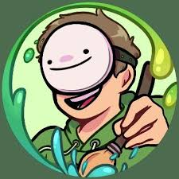
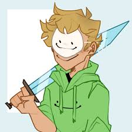
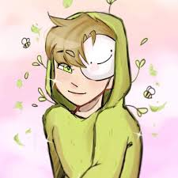
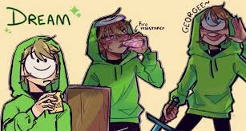
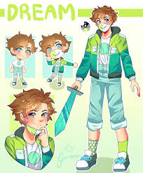
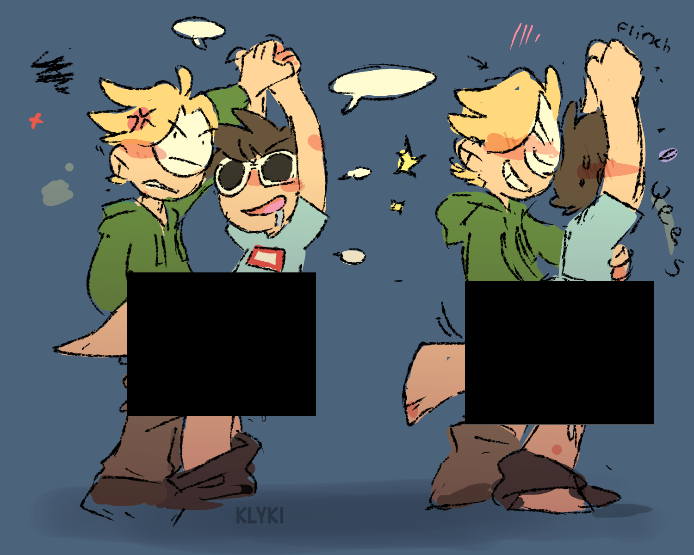
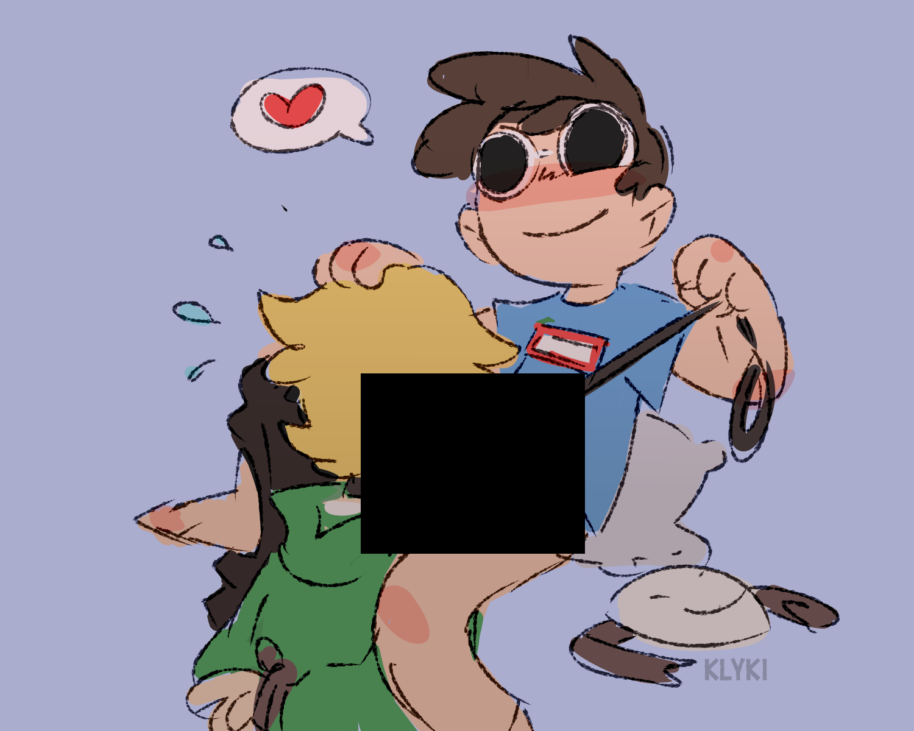
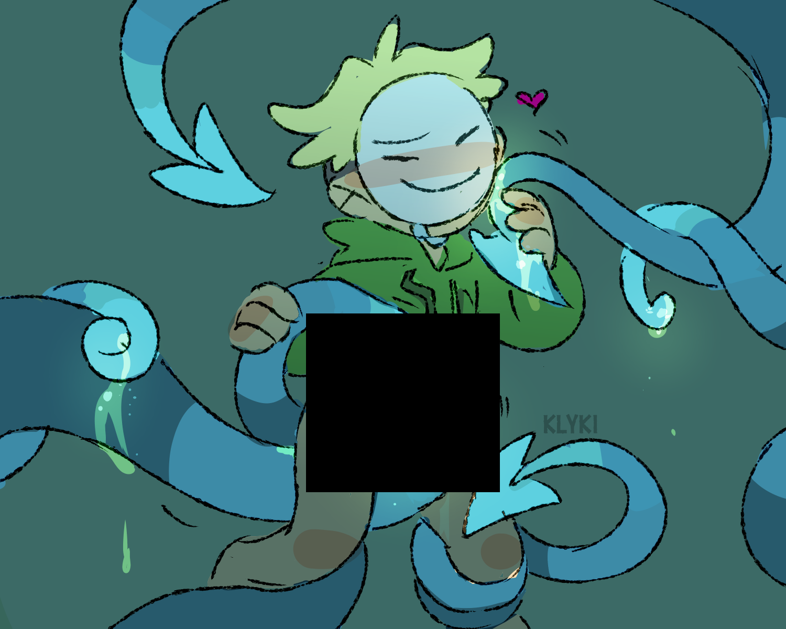
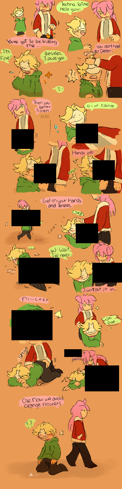

dream stans >:(
dream stans are awful because they are toxic. they mainly sexualised non sexual characters which makes them toxic.
mainly they're 14 year old white girls trying to get there attention to dream, sapnap and georgenotfound.
to show you how bad toxic the stans are, here are some fan art






then it gets a bit too out of hand




there is also a stan making animations on youtube. why
simply, dream stans will forever love, tweet, draw, animate, scream, stalk, cry, cancel and do what ever to get the attention of dream but it will never work out.